Introduction
Ce projet est basé sur le dataset 2016 Building Energy Benchmarking.
Il s'agit de relevés minutieux d'émissions de CO2 et de consommation d'énergie effectués par les agents de la ville de Seattle sur des bâtiments en 2016.
Ce relevés sont coûteux à réaliser, nous allons donc voir s'il est possible de faire des prédictions de ces variables en fonction des données structurelles des bâtiments.
Nous baserons ici nos expériences sur les bâtiments non destinés à l'habitation.
Il sera également évalué la pertinence de la variable ENERGY STAR Score pour nos prédictions.
Les étapes suivantes seront réalisées :
- Préparation des données.
- Analyse exploratoire.
- Tests de différents modèles pour nos prédictions.
- Déterminer les importances globales et locales des features.
Retrouvez tout le code de ce projet sur mon GitHub
Préparation des données
— 13% de données manquantes.
— 65% de variables numériques.
— 35% de variables catégorielles.
— Sélection des bâtiments non résidentiels uniquement.
— Suppression des bâtiments qui n'ont pas satisfait les exigences de mesure.
— PrimaryPropertyType
— NumberofBuildings
— NumberofFloors
— PropertyGFAParking
— PropertyGFABuilding(s)
— Neighborhood
— Latitude
— Longitude
— ZipCode
— YearBuilt
— TotalGHGEmissions
— Electricity(kBtu)
— SteamUse(kBtu)
— ENERGYSTARScore
— Création d'un dataset avec ENERGYSTARScore avec 981 instances.
Exploration des données
Matrice de corrélation
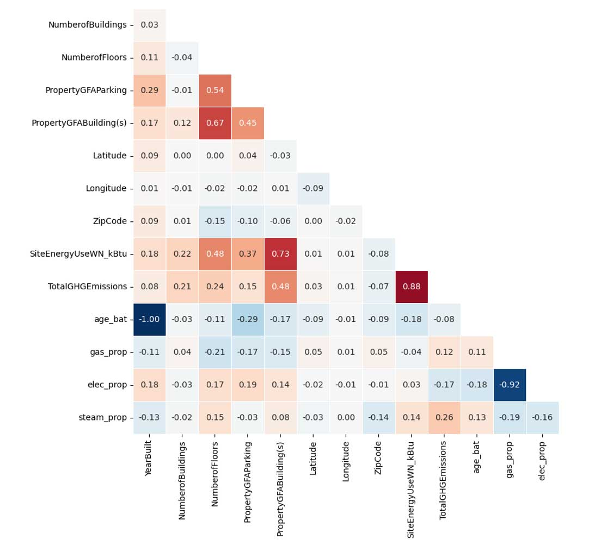
Distribution des variables numériques
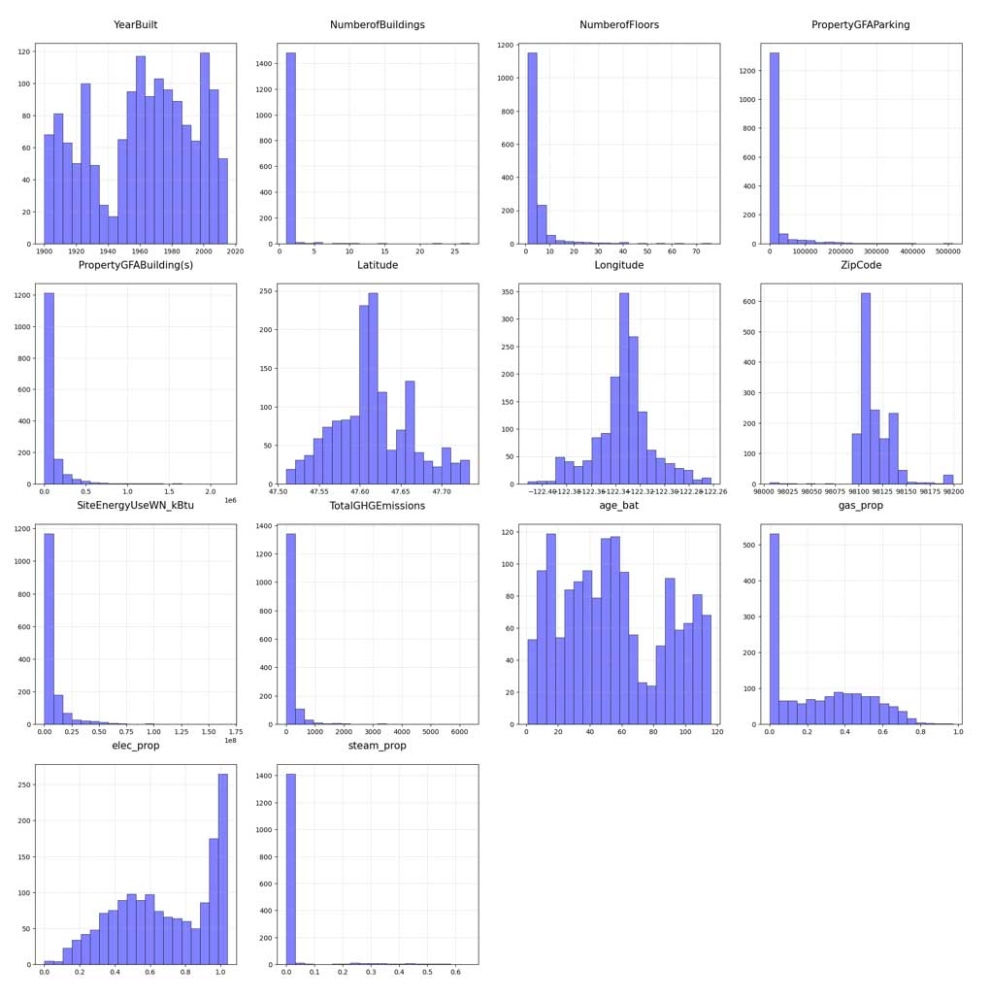
Influence du type d'utilisation sur la consommation d'énergie et les émissions :
Consommation d'énergie
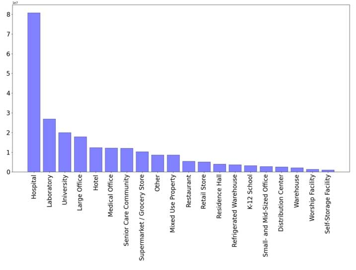
Émissions de CO2
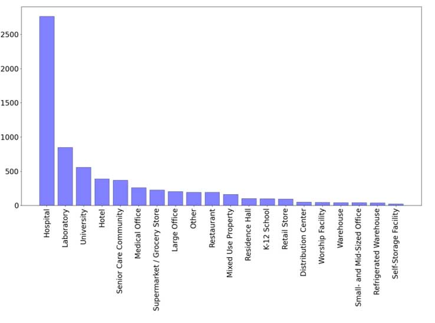
Influence du quartier sur la consommation d'énergie et les émissions :
Consommation d'énergie
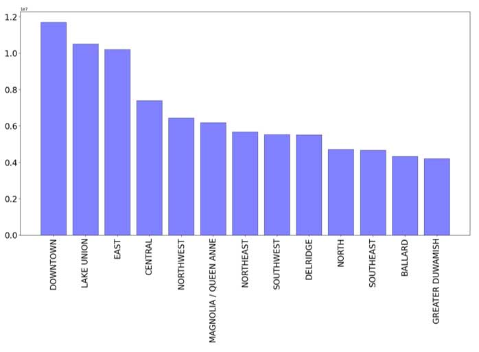
Émissions de CO2
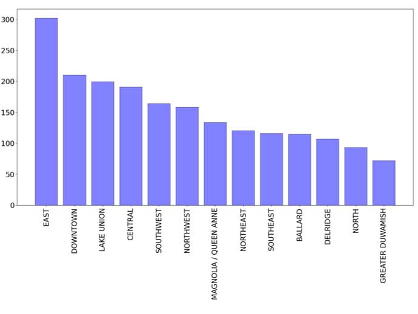
Relations entre les variables catégorielles et les variables cibles (ANOVA avec variables cibles passées au log) :
Consommation d'énergie
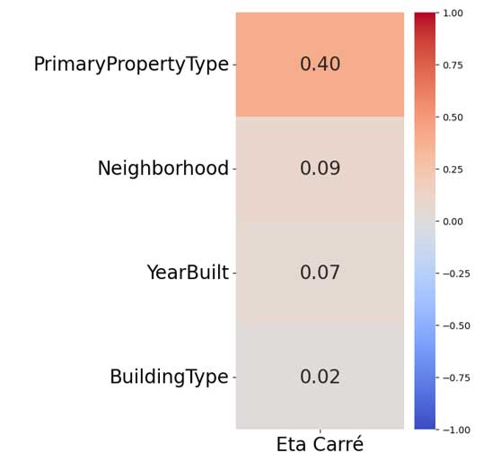
Émissions de CO2
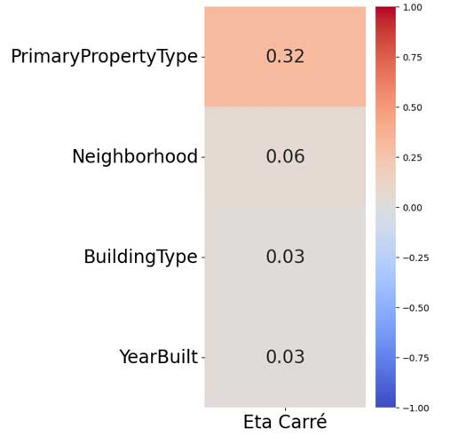
Choix du modèle
Processus de test des modèles :
— Nous testerons nos modèles avec et sans la variable ENERGY STAR Score.
— Sélection des autres features structurelles en fonction des modèles testés.
— Séparation des features et des variables cibles.
— Scaling des valeurs numériques et encodage des valeurs catégorielles.
— Séparation des données en train/test.
— Premier test des modèles avec les hyperparamètres par défaut.
— Tuning des hyperparamètres à l'aide d'un GridSearchCV avec 5 folds. Ceci nous donnera un score moyen sur grid.
— Prédictions des modèles avec les meilleurs hyperparamètres. Ceci nous donnera le score optimisé.
Schéma du processus :
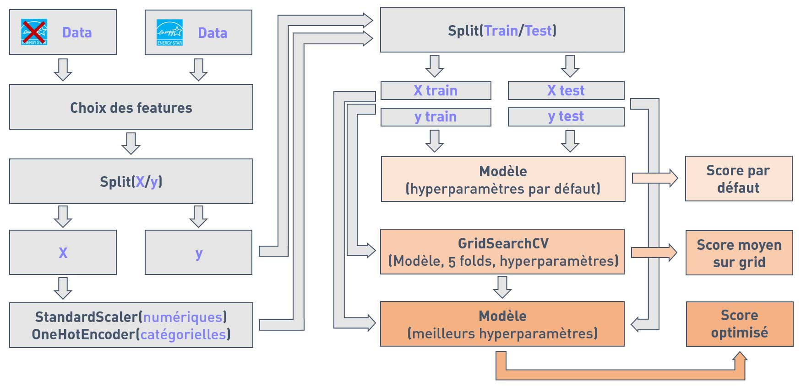
Sélection des meilleurs modèles :
Scores R² moyens (GridSearchCV) sans ENERGY STAR Score
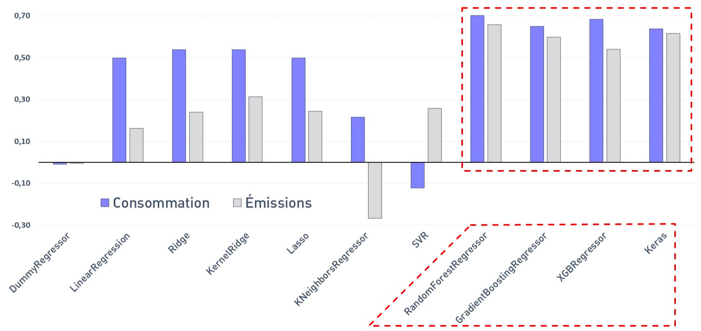
Les meilleurs résultats sont obtenus avec les modèles suivants :
— Random Forest Regressor
— Gradien Boosting Regressor
— XGB Regressor
— Keras (TensorFlow)
Scores R² moyens (GridSearchCV) avec ENERGY STAR Score
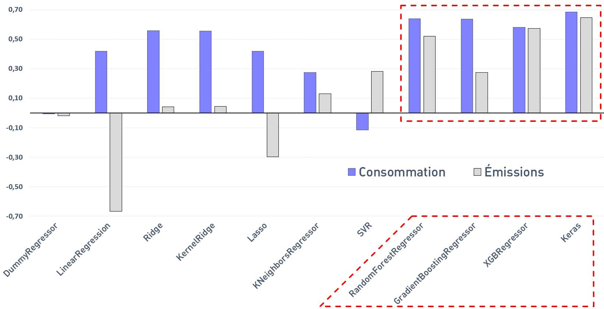
Les meilleurs résultats sont également obtenus avec les modèles suivants :
— Random Forest Regressor
— Gradien Boosting Regressor
— XGB Regressor
— Keras (TensorFlow)
Récapitulatifs des meilleurs modèles
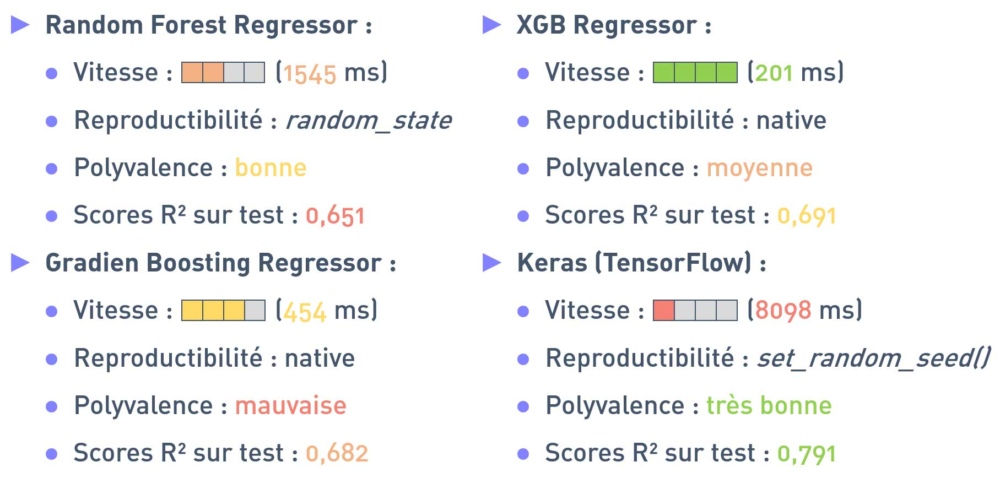
Les scores R² indiqués sont les scores moyens lors de la recherche sur grille, pour les deux variables cibles.
Malgré des temps de calculs plus longs (qui pourraient être accélérés avec une carte graphique), le modèle TensorFlow fournit les meilleurs résultats en termes de scores R² et de polyvalence. C'est donc ce modèle que nous retiendrons pour nos prédictions finales.
Scores R² pour les prédictions sur test avec Keras
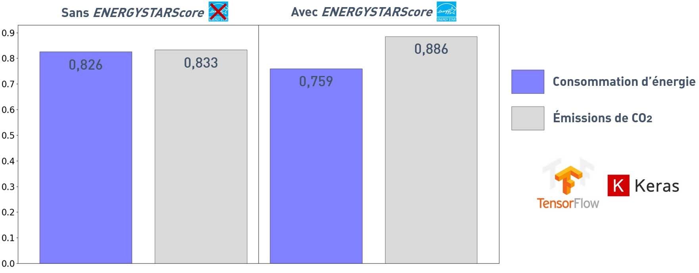
Utiliser la variable ENERGYSTARScore réduit le score pour la consommation et augmenter celui pour les émissions.
RMSE/MAE pour les prédictions sur test avec Keras
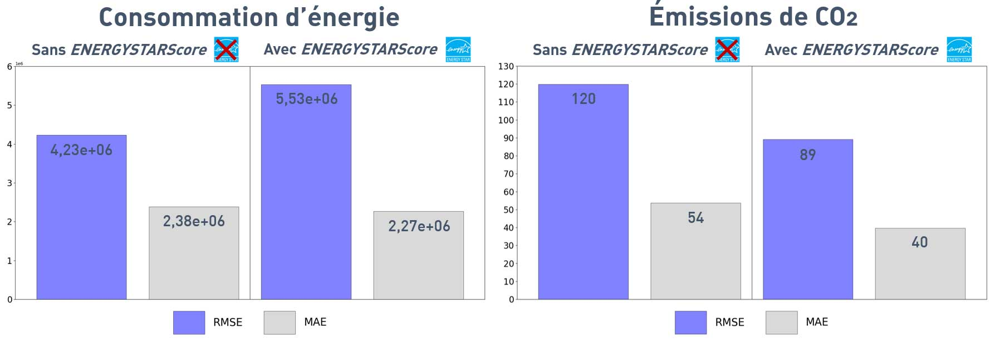
Utiliser la variable ENERGYSTARScore augmente la RMSE pour la consommation, réduit la RMSE et la MAE pour les émissions.
Importances des features
Importances globales des features représentées avec KernelExplainer() de la biliothèque SHAP
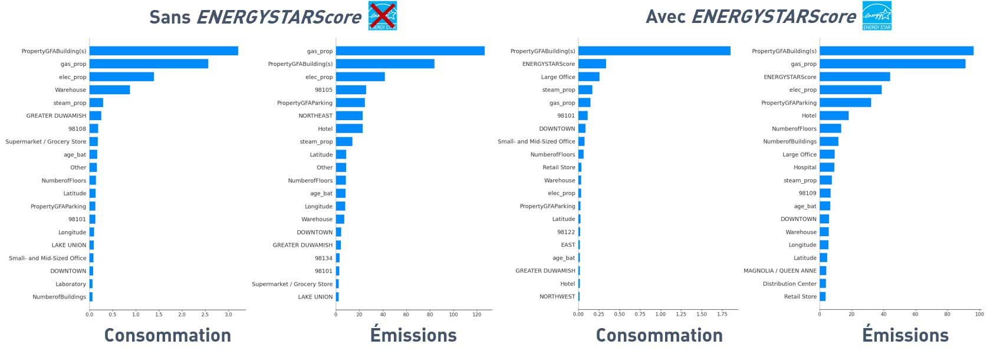
On retrouve souvent certaines variables dans les plus importantes : PropertyGFABuilding(s), gas_prop, elec_prop et ENERGYSTARScore (si utilisée).
Importances locales des features représentées avec la biliothèque LIME
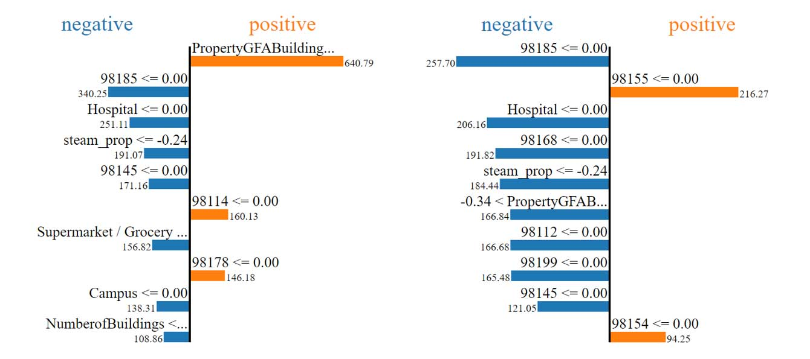
Exemple avec deux instances pour les émissions de CO2 avec ENERGYSTARScore
— Les importances locales varient en fonction des instances.
— Les importances locales varient par rapport aux importances globales.
Conclusion
— L'explication globale pour ce modèle avec SHAP est coûteuse en ressources.
Perspectives
— Tester différentes combinaisons de fonctions d'activation.
— Tester plus de combinaisons d'hyperparamètres.